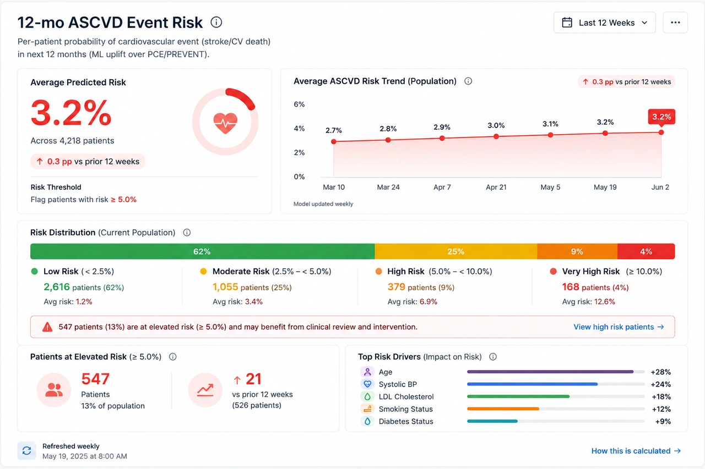
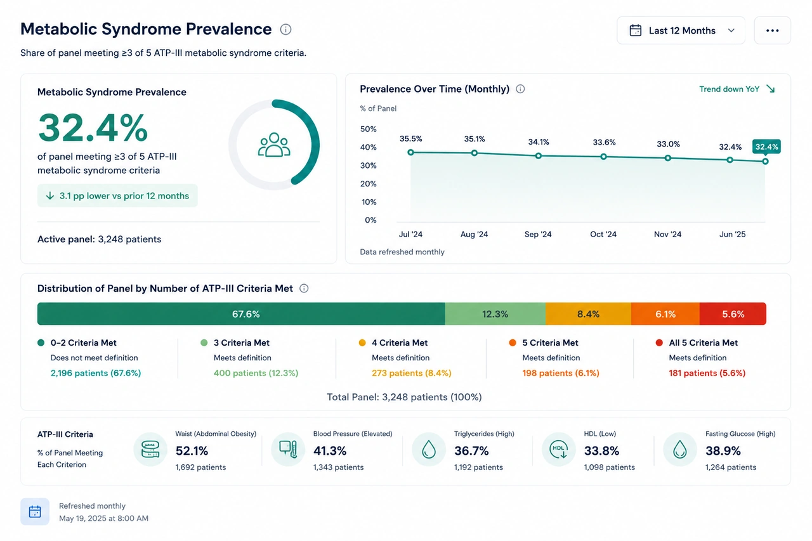
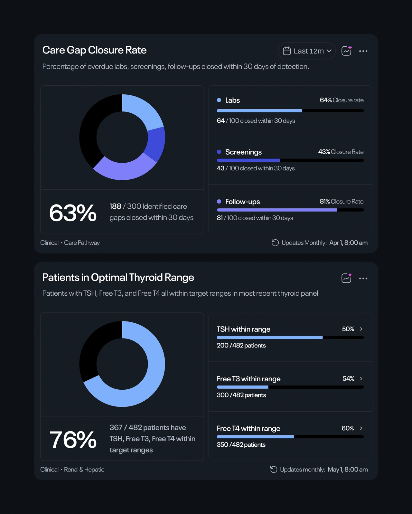
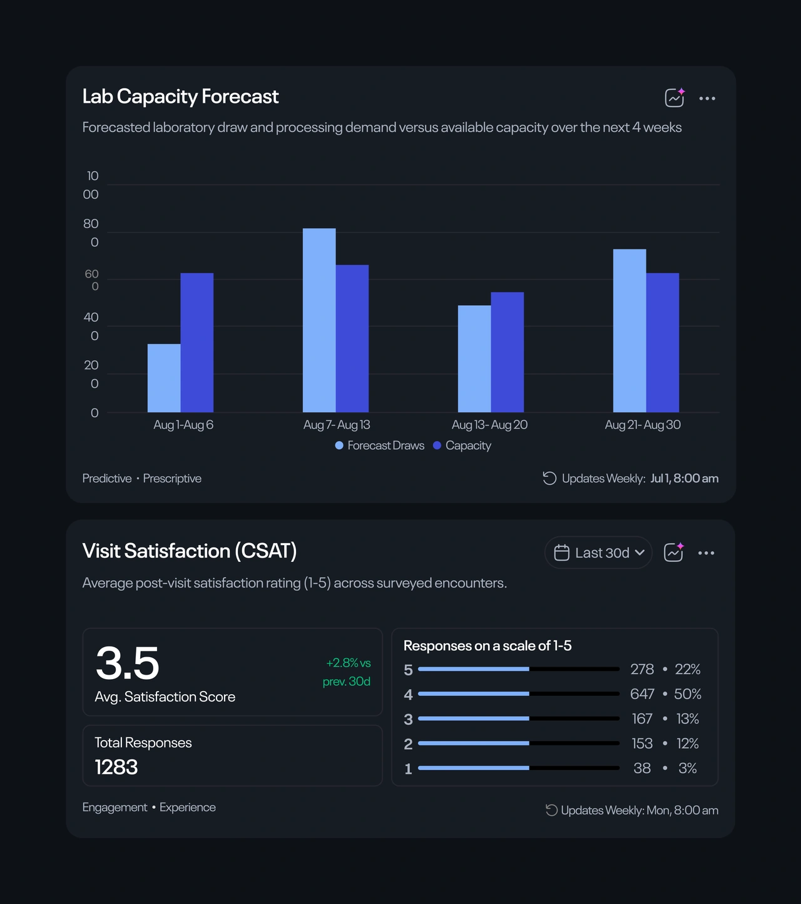
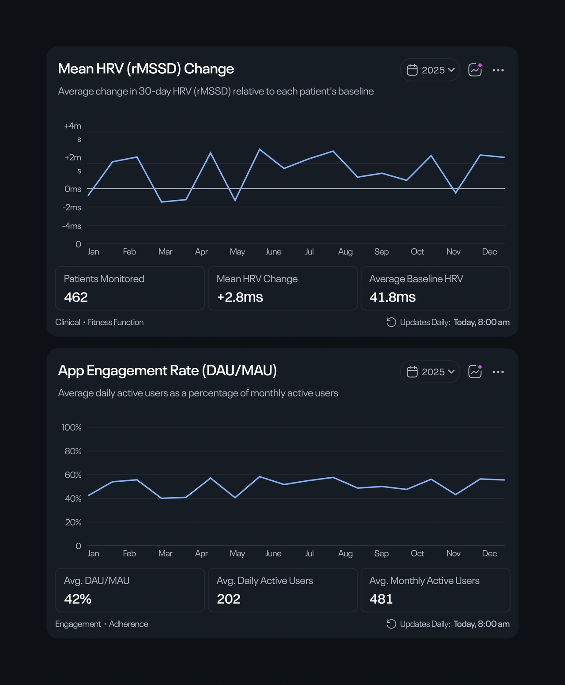
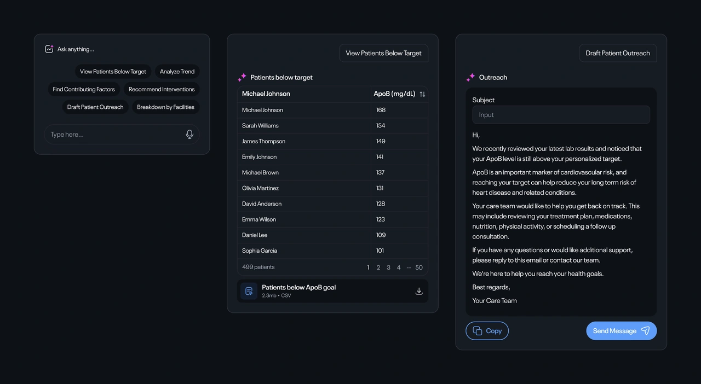

What was the project about?
The platform already helped hospitals run their day to day operations, but there was no way to see what was actually happening across the business. The founders wanted to add analytics, but beyond that, there wasn't much of a brief.
What did I do?
I started by figuring out what was worth measuring. That meant researching how hospitals track performance, exploring different ideas through wireframes, and using those concepts to help the team define what the analytics product should become.
Early Exploration
I researched how hospitals measure performance, financial health, and clinical activity, then created low fidelity dashboards for stakeholder feedback. The initial wireframes were exploratory, not polished designs, to visualize analytics before defining product requirements.


Analytics dashboard that lets users choose which charts and widgets to display

A modal to choose various widgets, organized by different parts of the platform.
When Design Changed the Brief
Presenting the first concepts revealed something unexpected. Instead of reviewing layouts, the team began questioning the analytics themselves.
The founder brought together engineering, marketing, and other stakeholders to rethink the reporting strategy. Together they produced a detailed specification describing available datasets, API endpoints, business logic, and reporting requirements.
The project had shifted from exploring possibilities to designing a product around clearly defined operational data.
The final brief included a table with this information for 100 widgets.
Turning Technical Data into Product Decisions
The specification had many healthcare terms and metrics that required knowledge beyond just interface design. I used ChatGPT to learn about these concepts, check the terms, and understand how the metrics relate. This helped me understand the business context behind the data and make better product decisions.


Several versions of the widget visualization created by ChatGPT to explain the concept.
Choosing the Right Visualization
Each visualization was chosen to match users' questions. Trends need different charts than department comparisons, and KPI cards show unique insights compared to tables. Every chart was selected for clear, precise data representation, not just looks.





I designed various charts and widgets to visualize different types of data. All 100 widgets and data points were grouped into categories. With minor adjustments for each data need, this component system simplified analytics development.

This overview illustrates the design of eight distinct dashboards, each featuring multiple subcategories. The backend system customizes the dashboard view based on user roles: super admins have access to all data, while doctors see only clinical and patient information, ensuring a tailored and efficient user experience.

Colors were thoughtfully chosen to provide clear contrast in both light and dark modes without needing separate variations. This approach ensures the analytics seamlessly integrate with the existing design system used throughout the EHR platform.

The main app had five cluttered links, so I made a mini app for analytics accessible from the profile menu, reducing clutter and allowing easy future additions.

We've added AI to every widget for quick, contextual actions without extra effort or development time. For instance, a widget showing patients at risk for heart attacks lets clinicians quickly identify them and send outreach emails or messages.
Bringing It All Together
What began as a request for "an analytics dashboard" evolved into a reporting system of nearly 100 widgets across nine dashboards, serving around 10 different user types. My role was to turn a growing collection of business requirements, technical specifications, and operational data into a product that engineering could build and stakeholders could align around. By the end of the project, the analytics suite had a clear structure, a scalable foundation, and a shared direction for development.